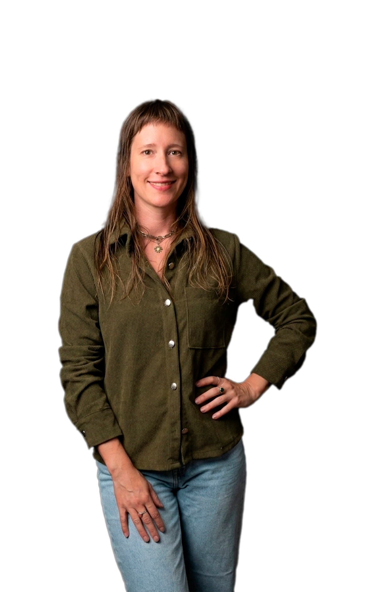
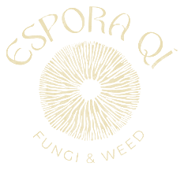
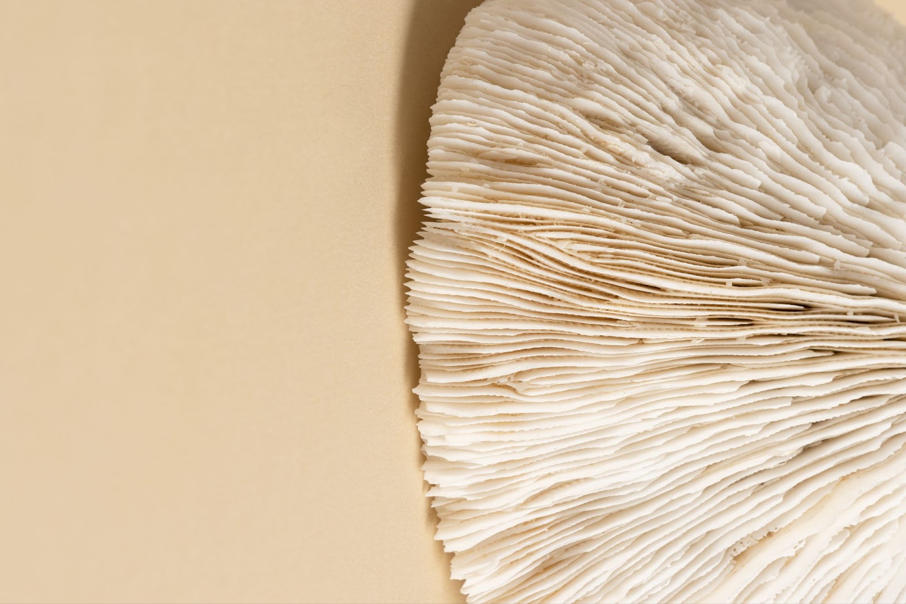
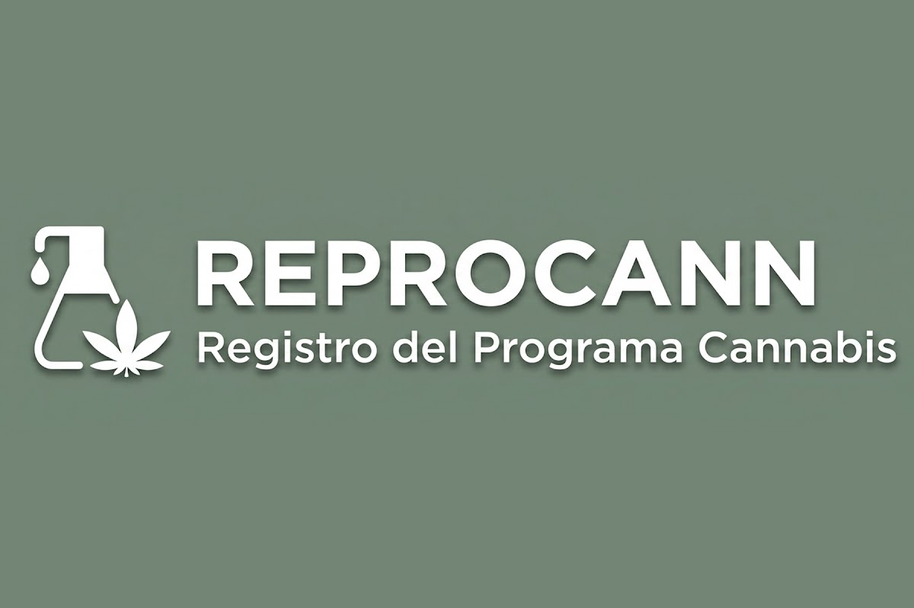

Atención a distintas edades
Acompañamiento a familias, adolescentes, personas adultas y mayores.
Mi objetivo es trabajar con cada consultante a raíz de sus síntomas. A través de una mirada integral y un trabajo interdisciplinario con otros profesionales, busco comprender su contexto, sus hábitos y los diferentes factores que pueden estar influyendo en su salud.
Busco construir tratamientos que tengan sentido para esa persona y que contribuyan a mejorar su salud, autonomía y calidad de vida.
Integro las herramientas de la medicina convencional con estrategias de prevención, alimentación y hábitos saludables, así como con terapéuticas complementarias en las que me he formado, como el cannabis medicinal, los hongos terapéuticos y la suplementación.
Trabajo con cada consultante desde una mirada integral e interdisciplinaria. Combino medicina convencional, hábitos saludables y terapéuticas complementarias para construir un tratamiento acorde a su historia y necesidades.
Mi objetivo es trabajar con cada consultante a raíz de sus síntomas. A través de una mirada integral y un trabajo interdisciplinario con otros profesionales, busco comprender su contexto, sus hábitos y los diferentes factores que pueden estar influyendo en su salud.
Busco construir tratamientos que tengan sentido para esa persona y que contribuyan a mejorar su salud, autonomía y calidad de vida.
Integro las herramientas de la medicina convencional con estrategias de prevención, alimentación y hábitos saludables, así como con terapéuticas complementarias en las que me he formado, como el cannabis medicinal, los hongos terapéuticos y la suplementación.
Atención presencial en Río Negro y virtual en todo el país.

Elaboremos juntos/as un tratamiento personalizado, integral e interdisciplinario para tratar tus síntomas y comprender cuál puede ser la raíz de lo que te sucede.
Acompañamiento a familias, adolescentes, personas adultas y mayores.
Consultas virtuales en todo el país y presenciales en General Roca, Río Negro.
Laboratorio de medicinas naturales con más de 10 años de experiencia.
Trabajo interdisciplinario y acompañamiento para profesionales de la salud.
Formo parte de una ONG dedicada a promover el acceso seguro de las personas mayores al cannabis medicinal y a los hongos terapéuticos. Buscamos que puedan conocer, disponer y decidir sobre alternativas amables con el cuidado de su bienestar, calidad de vida y autonomía personal.
También formo parte de un laboratorio de medicinas naturales con más de diez años de experiencia. Acompañamos procesos personales con formulaciones de calidad a base de hongos adaptógenos, aceites de cannabis medicinal y otras alternativas naturales.

Brindo charlas y capacitaciones dirigidas a la comunidad, equipos de salud e instituciones interesadas en conocer más sobre cannabis medicinal y hongos terapéuticos.
Es un tiempo de formación y diálogo con información clara, actualizada y basada en evidencia científica, abordando sus usos terapéuticos, alcances, cuidados y formas de acompañamiento responsable.

Tratamientos 01Diagnóstico preciso y plan personalizado para tu salud a largo plazo, combinando medicina convencional y complementaria.
Conocé más
Cannabis medicinal 02Evaluación médica y acompañamiento completo para tu inscripción en el Programa de Registro del Cannabis.
Conocé másElegí el día y el horario que mejor te venga, y coordinamos la modalidad que se adapte a vos.
Elegir turnoTe invito a ser parte de mi comunidad en Instagram: novedades, fechas de capacitaciones y contenidos sobre herramientas naturales y salud integral.
@dra.ivanakosak